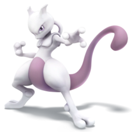
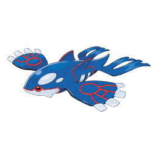
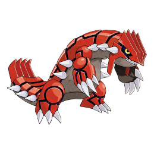
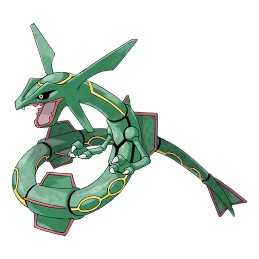
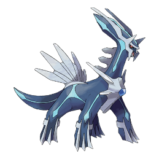
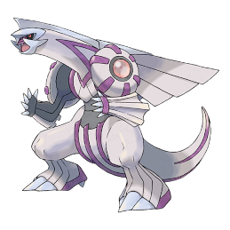
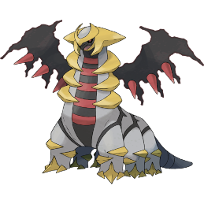
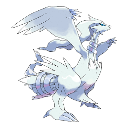
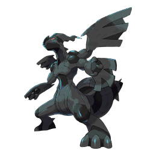
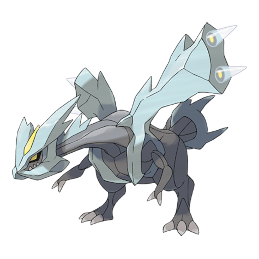

-
Pikachu
HP 274

Descrição
Quando está irritado, ele imediatamente descarrega a energia armazenada nas bolsas em suas bochechas.
-
Charizard
HP 360

Descrição
Diz-se que o fogo de Charizard queima mais quente se tiver experimentado duras batalhas.
-
Mewtwo
HP 416
Descrição
Seu DNA é quase o mesmo de Mew. No entanto, seu tamanho e disposição são muito diferentes.
-
Kyogre
HP 404
Descrição
Através da Reversão Primal e com todo o poder da natureza, ela retomará sua verdadeira forma. Pode provocar tempestades que fazem com que o nível do mar suba.
-
Groudon
HP 404
Descrição
Diz-se que Groudon é a personificação da própria terra. Lendas contam seus muitos confrontos contra Kyogre, enquanto cada um buscava ganhar o poder da natureza.
-
Rayquaza
HP 414
Descrição
Diz-se que Rayquaza viveu por centenas de milhões de anos. Restam lendas sobre como ele pôs fim ao embate entre Kyogre e Groudon.
-
Dialga
HP 404
Descrição
Tem o poder de controlar o tempo. Aparece nos mitos da região de Sinnoh como uma divindade antiga.
-
Palkia
HP 384
Descrição
Tem a capacidade de distorcer o espaço. É descrita como uma divindade na mitologia da região de Sinnoh.
-
Giratina
HP 504
Descrição
Diz-se que este Pokémon vive num mundo no reverso do nosso, onde o conhecimento comum é distorcido e estranho.
-
Reshiram
HP 404
Descrição
Este Pokémon lendário pode queimar o mundo com fogo. Ajuda aqueles que querem construir um mundo de verdade.
-
Zekrom
HP 404
Descrição
Este Pokémon lendário pode queimar o mundo com relâmpagos. Auxilia quem quer construir um mundo ideal.
-
Kyurem
HP 454
Descrição
Este lendário Pokémon de gelo espera por um herói para preencher as partes que faltam de seu corpo com verdade ou ideais.